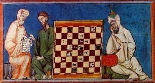

Brahmán Sissa
Filosofo, Sabio, originario de la India Siglo VI
El inventor del ajedrez es el sabio Sissa, en la India, durante el siglo VI. Es difícil saber con exactitud qué persona inventó el ajedrez, pero se tiene como más aceptada esta teoría: En la India del siglo VI el filósofo y brahmán Sissa, hijo de Dagir, inventó para recreo y entretenimiento de su señor (el rey Belkib) un juego que llamó chaturanga o «juego de las cuatro partes».
Origen del ajedrez
La principal leyenda sobre el origen del ajedrez habla de un rey de la India llamado Belkib. Buscando acabar con su aburrimiento, ofreció una recompensa a cambio de alguna distracción. Se dice que fue el sabio Sissa quien le propuso el ajedrez, un juego que comprendía una pequeña guerra sobre un tablero de madera.
El rey, entusiasmado, le ofreció lo que quisiera como recompensa. A cambio Sissa le pidió un grano de trigo sobre el primer recuadro del tablero de ajedrez. Luego, dos sobre el segundo y así sucesivamente, doblando cada vez la cantidad. Al rey le pareció una cantidad modesta y accedió, pero cuando empezaron los cálculos se descubrió que en la última casilla habría que depositar más de nueve billones de granos de trigo.
Luis Ramirez de Lucena
Escribio el libro de ajedrez más antiguo conocido, se llama Repetición de amores y arte de ajedrez . Ramirez primer maestro reconocido, y se publicó en Salamanca en 1497.
Evolución del ajedrez
Respecto a la evolución y expansión del ajedrez, 1.000 años después de la primera mención de un juego parecido en el libro sagrado hindú Mahabarata. Algunos autores creen que el ajedrez se desarrolla y evoluciona en la China o que recibe una fuerte influencia por la cercanía de sus fronteras. En el año 600, el juego se propaga Rusia y también a Persia, donde se llama chatrang, y los árabes lo copian como shatranj.
El primer torneo moderno de ajedrez se celebra en 1851 en Londres y es ganado por el alemán Adolf Anderssen contra el estonio Lionel Kieseritzky en la llamada “partida Inmortal». El primer campeón del mundo fue el maestro Wilhem Steinitz, austriaco nacido en Praga de ascendencia judía, que derrotó al maestro alemán Johannes Zukertort en 1886. Conservó el titulo hasta 1894, en que fue derrotado por el matemático alemán Emanuel Lasker, que mantuvo el titulo 27 años, nuevo récord, hasta que en 1921 se lo arrebató el cubano Raúl Capablanca.